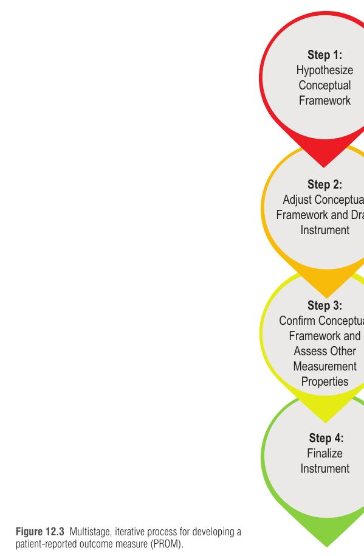
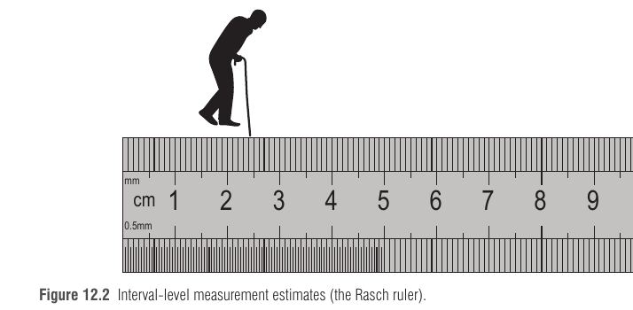
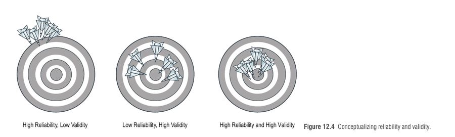

פרק עקרונות (לא קליני-ניתוחי, ולכן אין בו אנטומיה או טכניקה): הוא עונה על השאלה איך מודדים אם הניתוח "הצליח" מנקודת מבטה של המטופלת – ואיך בונים כלי מדידה שאפשר לסמוך עליו. זה הבסיס המתודולוגי שמאחורי ה-BREAST-Q וה-FACE-Q, וחומר קלאסי לשאלות על מושגי ליבה (validity, reliability, MID, Rasch).
רוב הניתוחים הפלסטיים אינם מצילי חיים ← מטרתם לשפר איכות חיים, תפקוד, סימפטומים ומראה ← מדדים "קשים" (הישרדות פלאפ, זיהום, ניתוח חוזר, ימי אשפוז) לא בהכרח משקפים את מה שהמטופלת חווה ביום-יום ← לכן צריך למדוד את הדברים ישירות מהמטופלת, בלי שרופא או אדם אחר יפרש את תשובתה ← כך נולדו ה-PROMs.
הגדרת ה-FDA: PRO הוא "כל דיווח על מצב בריאותה של המטופלת שמגיע ישירות ממנה, ללא פירוש של קלינאי או כל אדם אחר". PROM הוא שאלון מתוכנן מדעית שאוסף ומכמת זאת: איכות חיים הקשורה לבריאות (HRQL), שביעות רצון (מהתוצאה או מהמידע לפני הניתוח), מראה, ותסמינים (כאב, עייפות).
הקשר ל-VBHC: במערכות בריאות מבוססות-ערך (פרק 41) ערך = תוצאות מול עלות. ה-PROM הוא "המונה" שמייצג את קול המטופלת. הפרק מדגיש שהשימוש ב-PROMs בטיפול שגרתי קשור (באונקולוגיה) לדיאלוג טוב יותר רופא-מטופל, HRQL טוב יותר והישרדות ארוכה יותר, והאקדמיה הלאומית לרפואה בארה"ב רואה בהם מרכיב חיוני בטיפול ממוקד-אדם.
למה לא להסתפק בשאלון "שנראה הגיוני"? כי שאלון לא מבוסס יכול לתת מסקנה שגויה: ייתכן שהטיפול לא נכשל – השאלון פשוט שואל שאלות לא נכונות או לא מזהה שינוי.
| דור | איך נבנה | חולשה / חוזק | שימוש מתאים |
|---|---|---|---|
| שאלוני אד-הוק (ad hoc) | שאלות שנראו רלוונטיות למומחים; כמעט בלי הערכה פסיכומטרית ובלי קלט מטופלות | שאלות לא מובנות או לא רלוונטיות; ביצועים לא עקביים | רק חקר ראשוני. לא להנחיות, יעילות טיפול או החזר כספי |
| תיאוריית מבחן קלאסית (CTT, שאלוני "legacy") | פותחו לרוב בלי קלט מטופלות; ציון כולל אחד | טובים לזיהוי הבדלים גדולים בין קבוצות, לא שינוי קטן בתוך מטופלת; מושגים לא ברורים, לעיתים כמה מושגים בסקאלה אחת; לעיתים חייבים למלא כל הפריטים | נעשה בהם שימוש רב ויש נתוני עבר להשוואה |
| תיאוריית תגובת פריט (IRT), בעיקר Rasch (RMT) | מבוססים ראיונות מטופלות ו"מונחי-מושג"; כל סקאלה מודדת מושג יחיד | מדידה ברמת אינטרוול ("סרגל"), רגישות לשינוי ברמת מטופלת בודדת, אפשרות ל-CAT | תקן נוכחי: BREAST-Q, FACE-Q, CLEFT-Q, HAND-Q |
למה אינטרוול חשוב? בסרגל, ההפרש בין 12 ל-13 ס"מ שווה להפרש בין 14 ל-15 ← ב-RMT הפריטים "מסדרים את עצמם" על רצף יחיד (חד-ממדי, unidimensional) לפי קושי ← המספר שיוצא הוא מדידה אמיתית, "כמעט כמו סרגל", ולא רק ספירת נקודות ← אפשר להשוות מטופלות גם אם ענו על פריטים שונים.


| מאפיין | כללי (Generic) | ייעודי למצב (Condition-specific) |
|---|---|---|
| דוגמאות | SF-36, PROMIS-29, EQ-5D | BREAST-Q, FACE-Q, CLEFT-Q, HAND-Q, Michigan Hand, DASH, Boston Carpal Tunnel |
| יתרון | אפשר להשוות בין מחלות, התערבויות ואוכלוסיות (דלקת מפרקים מול קטרקט מול מחלת כלי דם היקפית) | רגיש לשינויים קטנים אך חשובים בתוצאה של ההתערבות הספציפית |
| חיסרון | לא רגיש מספיק לשינוי במצב מסוים (למשל אחרי שחזור אוטולוגי של שד) | אי אפשר להשוות בין מחלות שונות |
| כלי | תחום וזיכרון מהיר |
|---|---|
| BREAST-Q (Pusic 2008) | שחזור, הקטנה, הגדלה, שימור שד; סקאלות 0-100. מודולים נפרדים לכל התערבות |
| FACE-Q (2013) | הליכים אסתטיים בפנים: שביעות מהמראה, HRQL, תוצאות שליליות, שביעות מהטיפול |
| CLEFT-Q (2018) | גיל 8-29, שפה/חך שסועים: 12 סקאלות ב-3 תחומים (מראה פנים, תפקוד, HRQL) |
| HAND-Q | כל מצב מולד/נרכש בכף יד: 14 סקאלות ב-4 תחומים |
| SF-36 | 36 פריטים, 8 תחומים; ציון מתחת ל-50 = תוצאה גרועה |
| PROMIS-29 | 7 תחומים (כאב, עייפות, דיכאון, חרדה, שינה, תפקוד פיזי, תפקוד מיני) + סולם כאב 0-10 |
| EQ-5D | 5 ממדים (ניידות, טיפול עצמי, פעילות יומיומית, כאב/מצוקה, דיכאון/חרדה) + סולם ויזואלי |
שאלון טוב הוא בעל משמעות קלינית (שואל מה שחשוב למטופלות ולמנתחים) ואיתן מדעית (validity, reliability, responsiveness). ההבדל המרכזי: אי אפשר להניח שאחד גורר את השני.
| מושג | השאלה שהוא עונה עליה | איך בודקים | נקודות למבחן |
|---|---|---|---|
| תוקף תוכן (Content validity) | האם הפריטים משקפים את כל ההיבטים הרלוונטיים של המושג? | ראיונות מטופלות, ספרות, מומחים – בשלב האיכותני המוקדם | החשוב ביותר מבין סוגי התוקף |
| תוקף מבנה (Construct) | האם הציונים מתיישבים עם ההשערות התיאורטיות (קשרים פנימיים, קשר לכלים אחרים, הבדלים בין קבוצות)? | ניתוח RMT, known-group, convergent/discriminant | תהליך מתמשך, לא בדיקה חד-פעמית |
| תוקף קריטריון (Criterion) | האם הציון משקף "סטנדרט זהב"? | מתאם עם הכלי הקיים הטוב ביותר | לעיתים אין סטנדרט זהב ← משווים לגרסה קצרה/ארוכה של אותו כלי |
| מהימנות פנימית (Internal consistency) | האם הפריטים בסקאלה מודדים אותו מושג? | Cronbach's alpha (טוב: מעל 0.70); ב-RMT המקביל הוא Person Separation Index | רלוונטי לסקאלות מרובות פריטים |
| Test-retest | האם אותה תוצאה כשהמצב יציב? | מילוי פעמיים בהפרש 3-14 ימים; ICC לפחות 0.70 ב-50 מטופלות לפחות | קצר מדי ← זכירת התשובה; ארוך מדי ← המצב הקליני השתנה |
| Inter-observer | האם משקיפים שונים מסכימים? | Pearson r, ICC | כך נמדדת repeatability |
| רגישות לשינוי (Responsiveness) | האם הכלי מזהה שינוי קליני משמעותי לאורך זמן? | לפני ואחרי התערבות: paired t-test, effect size, SRM | Cohen: 0.2 קטן, 0.5 בינוני, 0.8 גדול |

MID (Minimal Important Difference) = ההפרש הקטן ביותר בציון שמטופלות תופסות כמועיל, ושהיה מצדיק שינוי בניהול הטיפול (בהיעדר תופעות לוואי ועלות מוגזמת).
| מבוסס-התפלגות (Distribution-based) | מבוסס-עוגן (Anchor-based) | |
|---|---|---|
| עיקרון | קשר בין גודל האפקט לשונות הנתונים (effect size, SRM) | משווים את שינוי הציון לעוגן חיצוני מובן למטופלת (מדד חומרה, שאלת שינוי גלובלית) |
| נקודת מבט המטופלת? | לא – רק סטטיסטיקה של המדגם | כן |
| המלצה | תמיכה, או כשאין עוגן | מועדף |
Responder analysis: במקום להשוות ממוצעי שינוי, סופרים איזה אחוז מכל קבוצה השתפר ביותר מה-MID; מכאן אפשר לחשב NNT.
פריטי Rasch עצמאיים זה מזה וממפים היררכיה קלינית ← לכן אפשר לדעת מיקום על ה"סרגל" גם מתת-קבוצת שאלות ← האלגוריתם בוחר שאלה ראשונה (זהה לכולן) ← מעריך ציון ← בוחר את השאלה הבאה האינפורמטיבית ביותר לפי התשובה הקודמת ← חוזר עד שמתקיים כלל עצירה (רמת דיוק מוגדרת). מטופלות שונות עונות על שאלות שונות, אך הציונים ניתנים להשוואה.
תוצאה: בקיצור משך מילוי; ב-BREAST-Q Satisfaction with Breasts (שחזור) הקיצור היה 38-75% עם שמירה על מהימנות. לא מתאים לכלים שכבר קצרים (למשל Sexual Well-being ב-BREAST-Q, 6 פריטים).
Hypothesize ← Adjust ← Confirm ← Finalize. אפשר לקרוא כ-"HACF" ("האק-אף") או לזכור: "הרופאה אומרת, המטופלת מתקנת, השטח מאשר, הסטטיסטיקה חותמת".
חייט (שואל שאלות) רוצה למדוד חליפה למטופלת. אד-הוק = חייט שמנחש מידות לפי העין. CTT = סרגל מקופל בלי מספרים אחידים. Rasch = סרגל מדויק שבו כל סנטימטר שווה לסנטימטר אחר. תוקף = האם מדד בכלל את הגוף (ולא את הכובע). מהימנות = האם מדד אותה מידה פעמיים. Responsiveness = האם הסרגל מרגיש כשהיא רזתה בס"מ אחד. MID = כמה ס"מ צריכים להשתנות כדי שהמטופלת תרגיש שהחליפה באמת יושבת אחרת.
מנהלת יחידת שחזור שד רוצה להחליף שאלון פנימי שפיתחו המנתחים ("האם את מרוצה מהשד?", בלי ראיונות עם מטופלות) בכלי מבוסס. היא בוחרת BREAST-Q ומוסיפה SF-36 לעוקבה. צוות המחקר מתכנן לחלק את השאלון פעמיים בהפרש של 6 חודשים כדי "לבדוק מהימנות". בנוסף, כדי לקצר מילוי בטאבלט במרפאה, הם שוקלים CAT. לבסוף הם רוצים לדעת מהו שינוי בציון שאותו מטופלות באמת מרגישות.